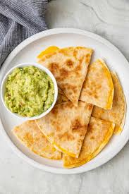

Home
Recipe 1

Cheese Quesadilla Recipe
If you love cheese quesadillas and cooking, you should make this recipe and fill your stomach!
Ingredients
- 1 cup shredded cheddar cheese
- 2 large flour tortillas
- Salsa or sour cream, for dipping
Steps
- Heat a skillet over medium heat
- Place one tortilla in the skillet
- Sprinkle cheese evenly on top
- Top with the second tortilla
- ook 2 to 3 minutes per side until golden and cheese melts
- Cut into wedges and serve with salsa or sour cream